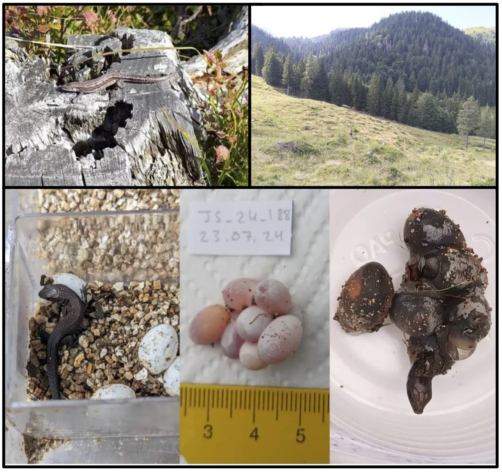
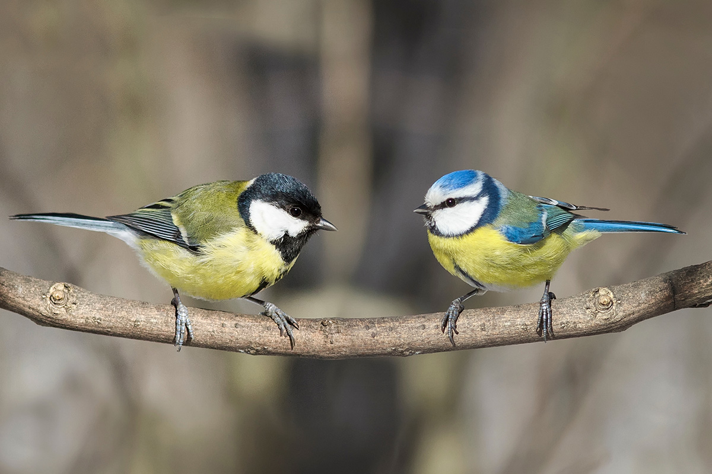
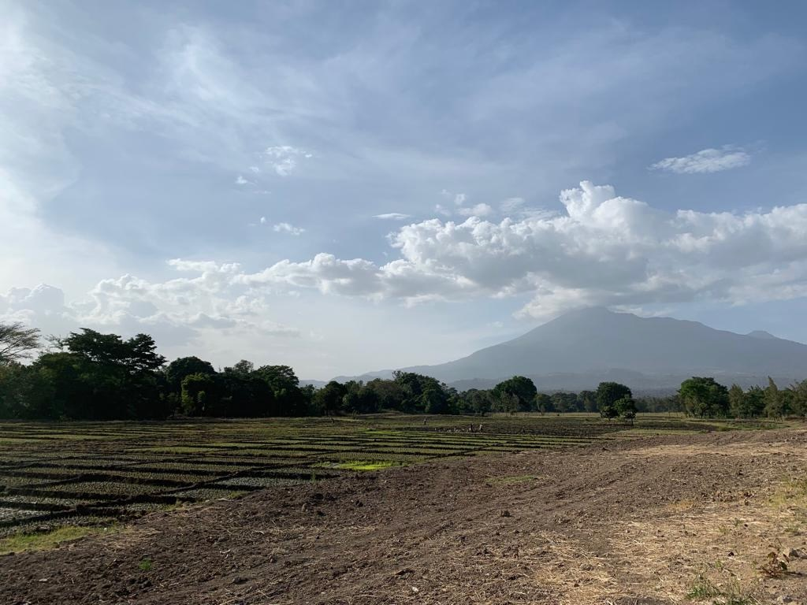
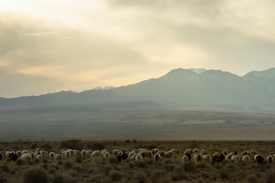
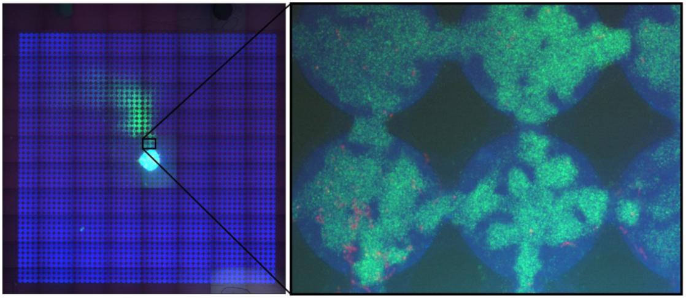
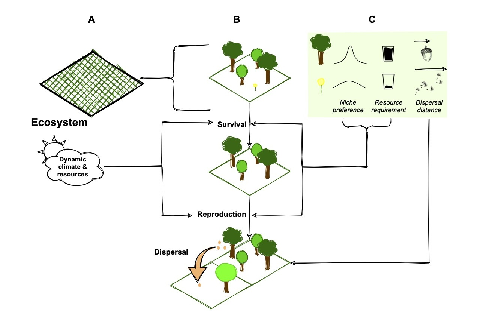
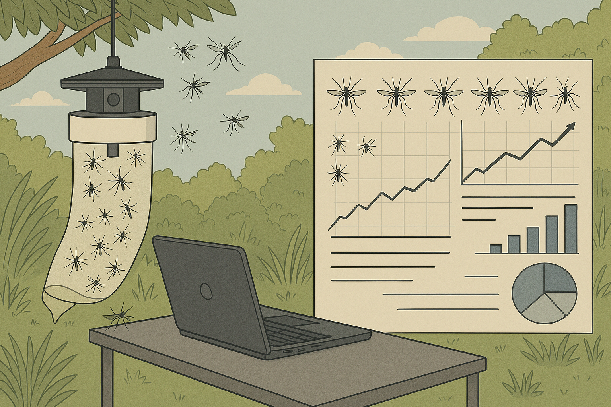
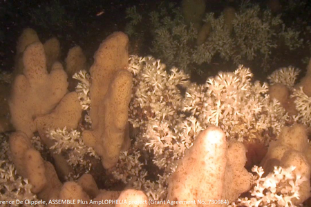

Project descriptions
The listed projects represent the projects that are available for the 2026 cohort. In year 1, students will undertake a group rotation project in 3 of the listed projects, before selecting a single project as their PhD topic.
University of Glasgow
The listed projects represent the projects that are available for the 2026 cohort. In year 1, students will undertake a group rotation project in 3 of the listed projects, before selecting a single project as their PhD topic.

This project focuses on the fundamental question of how biodiversity is shaped through the interplay of natural selection, gene flow and introgression, and environment. We will develop cutting-edge tools to study hybridisation between closely-related lineages. This mixing of diverged genomes generates both adaptive and low-fitness variation, and so presents a unique opportunity to identify regions of the genome important for local adaptation and resilience in natural populations, critical for understanding how species respond to climate change.
While high-quality phenotypic, ecological and genomic data for natural populations are increasingly available, methods for analysing such complex high-dimensional data lag far behind. The student will integrate cutting-edge population genetic methods (ancestral recombination graphs, ARGs, which capture genetic genealogies) with machine learning approaches (CNNs and GNNs), to develop general new methods for analysing genomes jointly with recorded life history, demography, and ecological parameters. This will enable identifying selection signatures in the presence of gene flow and quantifying genetic interactions in hybridising systems.
The student will validate these methods on a striking example of a hybridising system: interbreeding between lizards (Zootoca vivipara) that are egg-laying and live-bearing, traits which correlate with climate. Building on our previously collected molecular and ecological data, the student will assess the functional relevance of genomic regions and their sex-specific and ecology-relevant effects, providing fundamental insights into the genetic basis of divergence in this species and beyond.
Keywords: population genomics, machine learning, evolutionary ecology

Ecological research has shown that urbanisation leads to a reduction of biodiversity. But what ecological mechanisms lead to biodiversity loss in cities? Urbanised landscapes are characterised by a complex mosaic of habitat patches, some of which are unsuitable to wildlife. As the prevalence of such unsuitable habitat increases, species may decline and even become locally extinct, via a reduction in productivity, survival or by simply retreating into diminishing suitable areas. Moreover, a population may be maintained locally due to subsidies from nearby high-quality areas, giving the impression that the habitat matrix is sufficient to support a population locally. However, the viability of subpopulations in different habitats and the dispersive exchanges between them are difficult to isolate and quantify experimentally. Furthermore, demographic responses to urbanisation may be subject to time lags, but such temporal delays have rarely been quantified and included in models of urban population dynamics. However, these demographic processes are confounded and impossible to observe directly at the large spatio-temporal scales.
This project will use large scale, citizen science data on birds to develop novel, dynamical approaches that will formally estimate the contribution of habitat suitability, immigration and time lags to the dynamics of populations in complex urban mosaics.
Keywords: Urbanisation, population dynamics, Bayesian modelling

The global distributions of vector borne diseases affecting human health are defined by climate and ecological factors. There is increasing evidence of the influence of changes in climate, land use and human population on the distribution and impacts of these infections. Over 4 billion additional people are likely to be at risk of malaria and dengue by 2070. Understanding the climate sensitive dynamics of vector borne diseases is essential to control these infections and reduce their health impacts globally in the context of accelerating changes in climate and human population distribution.
This project will utilise research platforms and datasets generated through the VectorGrid Africa project. VectorGrid Africa spans five countries and will run from 2025-2030 to establish a networked observatory for systematic and long-term collection of data on mosquitoes and mosquito-borne diseases in Africa. The focus of this PhD project will be on estimating the human and livestock health impacts of priority vector borne pathogens - including Rift Valley Fever, Dengue and Chikungunya - and the multifactorial relationships between environmental factors, mosquito populations and these mosquito-borne diseases.
Keywords: Epidemiology, vector borne diseases, climate

Understanding collective movement and coordination without central control is key to explaining behaviour in animals, robots, and human systems. Classic mechanistic models such as the Vicsek model and zonal interaction frameworks show how simple local rules can generate global order, but they rely on strong assumptions and struggle with noisy, heterogeneous, real-world data. To bridge this gap, modern approaches seek models that learn interaction rules directly from data while preserving interpretability.
Graph neural networks (GNNs) capture interactions by representing individuals as nodes connected by edges, and have performed well in domains such as traffic modelling, molecular systems, and crowd simulation. However, their reliance on fixed neighbourhoods limits their ability to capture long-range dependencies and dynamic interaction ranges.
Transformers, driven by self-attention, provide a more flexible alternative: every agent can dynamically attend to every other agent, enabling richer spatio-temporal representations without hand-crafted rules. This PhD project proposes replacing GNNs with transformer architectures to infer governing parameters and interaction rules in collective movement systems, incorporating environmental and contextual cues for improved generalization.
Transformer-learned embeddings will be integrated into approximate Bayesian computation to quantify uncertainty, diagnose model fit, and support hypothesis testing. Applications include real animal movement datasets, both from the supervisors' previous work and publicly available databases, and potential extensions to predator-avoidance behaviours, with implications for ecology, public safety and national security.
Keywords: Collective movement, transformers, uncertainty quantification

Infectious diseases are fundamental drivers of ecology and evolution as they regulate the size of populations, shape interactions and impose selective pressures across space and time. Host contacts and movement within landscapes are among the most important determinants of epidemiological dynamics. Accurately monitoring transmission in the wild is a challenging and resource intensive task. This results in a lack of data which limits the accurateness of eco-epidemiological models, fundamental to understanding disease patterns, predicting the impact of environmental change and designing appropriate interventions. Computer simulations can make up for this lack of data, but they inherently neglect the complexity that characterizes biological systems. “Organic” models, which consist in controlled lab experiments, conjugate the control and quantitative powers of computer simulations to the complexity of biological systems and may represent a valid alternative.
In this project, we will leverage microfluidics to build controlled, structured environments. These will be populated with bacteria and bacteriophages to build an organic model of a complex natural landscape in which disease spreads in a population. The small size and rapid life cycle of bacteria, together with the birds-eye view offered by microscopy, will allow us to observe within days how entire epidemics play out, rapidly generating large datasets. Using computer vision and machine learning approaches, we will analyse these datasets to understand fundamental and unresolved epidemiological aspects, such as the contributions of host susceptibility and heterogeneity to disease spread and herd immunity. In collaboration with the group of Diana Fusco at the University of Cambridge, we will compare the predictive capabilities of organic and in silico models.
Keywords: epidemiological modelling, image analysis, microbial ecology

Plants are fundamental to the provision of ecosystem services, and we are wholly dependent on them for survival. Yet, as a result of both anthropogenic pressures and climate change, biodiversity is being lost at unprecedented rates and many plant species are under threat of extinction. We need a comprehensive plant trait dataset as input to the next generation of biodiversity-climate models. In its absence, existing approaches are limited to modelling “Plant Functional Types” and cannot estimate the impacts of climate and land use change on individual species or help inform decision making on mitigating biodiversity loss.
These data, from climate preferences to growth rates, are locked in the texts of the vast botanical literature of the Biodiversity Heritage Library and other botanical and ecological texts available to the Natural History Museum and the University of Glasgow. This studentship would use the recent advances in large language models (LLMs) to extract this information and feed it into an ecosystem modelling tool that we have developed (https://github.com/EcoJulia/EcoSISTEM.jl). This will boost EcoSISTEM’s ability to accurately capture species responses to climate change, and thereby both uncover threatened native species and identify any potential ecological replacements for them.

Mosquito-borne diseases such as malaria, dengue, Zika, and Japanese Encephalitis pose persistent public health challenges in the Philippines. This PhD project aims to develop and evaluate an integrated surveillance system capable of predicting outbreaks earlier than traditional case reporting by combining entomological, molecular, epidemiological, and environmental data within a One Health framework. The student will:
(1) conduct targeted fieldwork to expand spatial and temporal coverage of vector data;
(2) apply advanced molecular techniques in the laboratory for multi-pathogen screening;
(3) build Bayesian hierarchical and spatio-temporal models to estimate vector abundance, infection prevalence, and transmission risk using historical and newly collected datasets linked to climate and land-use variables; and
(4) generate probabilistic risk maps and short-term forecasts to inform timely interventions.
Additionally, the project will prototype interoperable data platforms and dashboards to enable cross-sector coordination among health, veterinary, and environmental agencies and integrate outputs with national systems such as PIDSR. This project will strengthen outbreak preparedness and contributes to sustainable One Health surveillance.
Keywords: One Health surveillance; Bayesian spatio-temporal modelling; integrated vector monitoring; interoperable data platforms

How can artificial intelligence be used to better understand and monitor, and therefore ultimately inform the protection of marine benthic ecosystems under increasing environmental change? Climate projections indicate substantial future losses of suitable habitat for many habitat-forming species, highlighting the urgent need for improved, long-term monitoring approaches. Addressing this challenge is difficult due to the high cost, logistical constraints, and limited temporal coverage of traditional marine surveys. Depending on the student’s interests, this PhD project can take two different directions.
For the first research direction, you will characterise and compare soundscapes across structurally complex marine benthic habitats, building a sound library and identifying habitat-specific acoustic signatures using spectral and soundscape metrics. You will further develop and apply AI-driven acoustic analysis pipelines, designing and optimising deep learning models to automate the detection and classification of marine biological sounds within large datasets. Ultimately, you will investigate spatial and temporal dynamics in benthic soundscapes using advanced statistical analyses, linking acoustic patterns to environmental conditions and biodiversity information derived from existing or time-lapse imagery. Together, this integrated approach will advance marine biodiversity monitoring and support more effective conservation and management strategies.
The second research direction places more of an emphasis on advancing AI methodology, while increasing the efficiency, accuracy, and reliability of annotation and classification of large marine datasets. Timely and accurate analysis of these long-term datasets will aid marine biodiversity monitoring efforts. Design of more efficient strategies further aims to reduce the carbon footprint of training and fine-tuning large machine learning models. The project is expected to lead to various novel insights for the machine learning community such as on optimal pre-training choices for downstream robust performance, the optimal order of learning samples with varying complexity levels, navigating instances with label ground truth uncertainty, and re-evaluation of metric design.
Keywords: AI, marine ecology